Build agentic testing systems to validate AI generated code
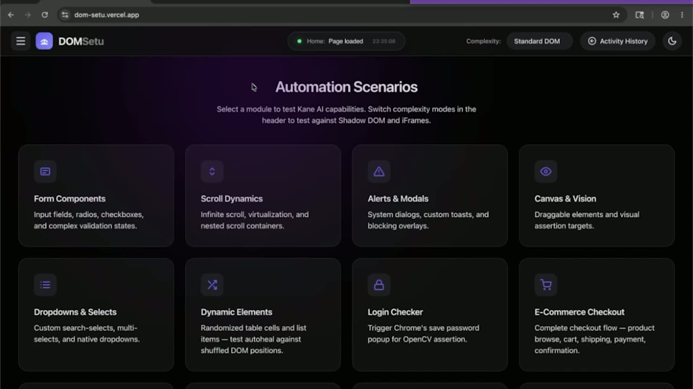
Official description
AI is driving rapid expansion of software, but vibe coding lacks the rigor needed for reliability. Traditional tests can’t keep pace with agent-generated logic. To scale, we must move beyond manual checks to Agentic Testing: using autonomous agents to validate autonomous systems. Explore patterns for creating autonomous test agents, detecting failures across workflows, and continuously verifying behavior. Take away practical approaches to make AI-driven software reliable and production ready.
Summary
Overview
The session argues that while AI agents can now write, run, and patch code at high speed, they cannot yet validate it in a trustworthy way, creating a reliability gap for agent-generated software. It introduces Kane CLI [inferred], a command-line validation layer from TestMu AI [inferred] that lets humans and agents run natural-language, browser-based end-to-end tests, with a live demo of an interactive run and an agent-driven run.
Key announcements
- Launch of Kane CLI [inferred], a command-line validation layer ([00:01:55
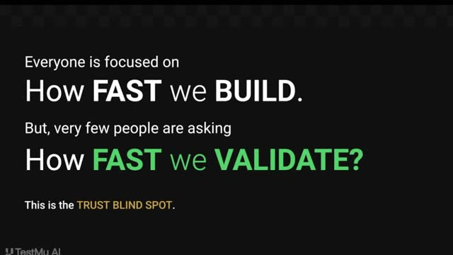
m05sm10sp05sp10s]) — A tool that tests any feature or application in a local browser and can be driven directly by humans or AI agents. - Native integration with coding agents ([00:02:13
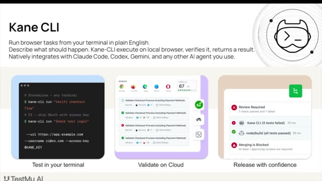
m05sm10s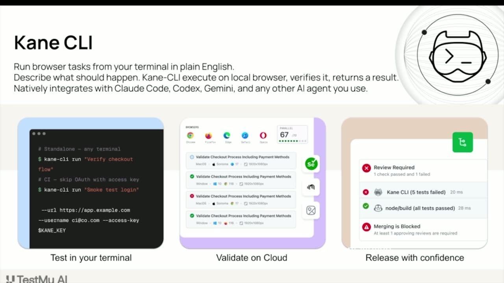
p05sp10s]) — Kane CLI connects to agents such as Claude [inferred], Codex, Gemini, and Copilot via an agent.md file so they can author and run end-to-end tests. - Automatic Playwright code generation from natural language ([00:03:29
 m05sm10sp05s
m05sm10sp05s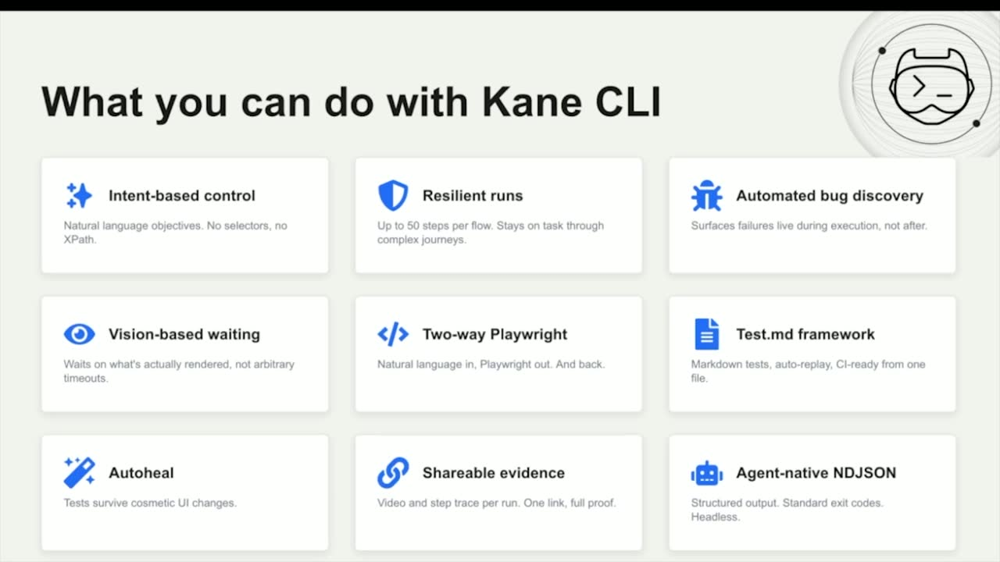
p10s]) — Plain-language objectives produce reusable Playwright test cases as output. - Test.md framework with auto-heal ([00:03:41
 m05sm10s
m05sm10s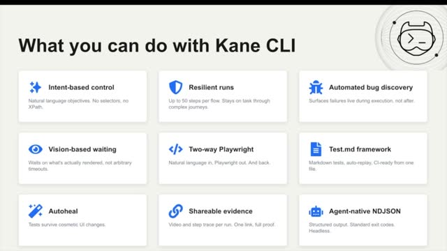
p05s p10s]) — Markdown-stored test cases can be replayed, triggered from CI/CD, and self-heal when the UI changes, returning updated test code.
p10s]) — Markdown-stored test cases can be replayed, triggered from CI/CD, and self-heal when the UI changes, returning updated test code. - Shareable evidence and agent-native output ([00:04:08m05sm10sp05sp10s]) — Each run produces video logs, trace recordings, a shareable replay link, and structured NDJSON output consumable by agents.
{kind=link}
{kind=link}
{kind=link}
{kind=link}
{kind=link}
{kind=link}
{kind=link}
{kind=link}
{kind=link}
{kind=link}
{kind=link}
{kind=link}
{kind=link}
{kind=link}
{kind=link}
{kind=link}
{kind=link}
Topics covered
- The validation gap between fast AI code generation and trustworthy testing.
- Adding a deterministic validation layer between development and shipping.
- Intent-based control: describing objectives in natural language without selectors, locators, or XPaths.
- Resilient test runs across complex multi-step user journeys.
- Vision-based waiting on rendered pages instead of arbitrary time delays.
- Automatic bug discovery and flagging during execution.
- Three usage modes: direct CLI, an importable SDK for CI pipelines, and agent integration via an agent.md file.
- Headless execution for agents versus interactive TUI mode for humans.
- Live demo: a checkout flow plus extracting an order ID and pasting it into a second browser session.
- Cross-browser, cross-device, and cross-environment validation in the cloud.
Notable quotes
"Agents can write code now. They can also run it, break it and patch it. What they haven't been really able to do is test it not in the way that you would trust before shipping an application to production."
"Everyone is focused on how fast we are building, but very few of our are asking the real question, how fast we are validating."
"KNCLI will provide them hands and eyes to perform those end to end workflows."
Products and tools mentioned
- Kane CLI [inferred]
- TestMu AI [inferred] (testmuai.com)
- Playwright
- NDJSON
- npm
- Claude [inferred]
- OpenAI Codex
- Google Gemini
- GitHub Copilot
- Google Search
Speakers featured
- Spurs KC [inferred], Developer Relations Manager at TestMu AI [inferred]
Follow-up resources
- testmuai.com
Frames
{kind=link}
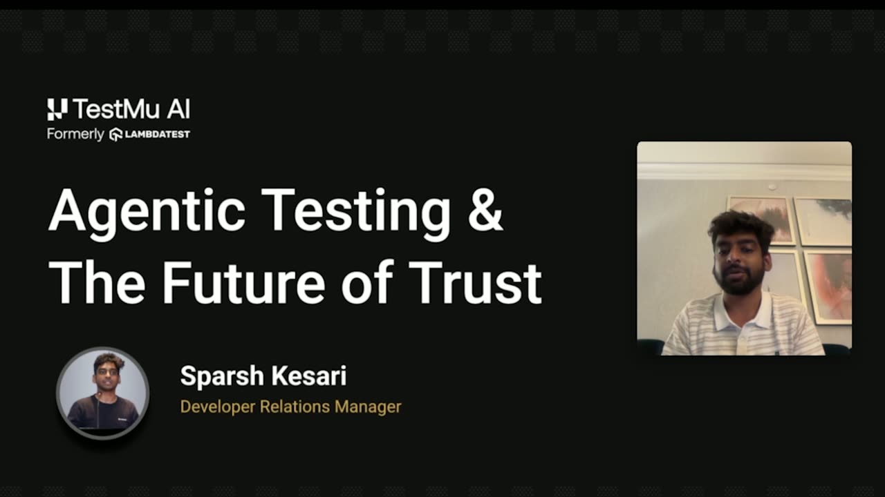
{kind=link}
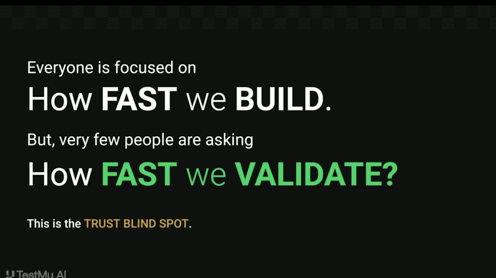
{kind=link}
{kind=link}
{kind=link}
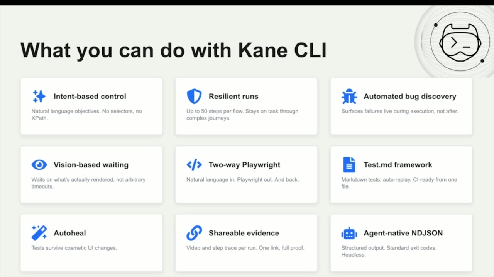
{kind=link}
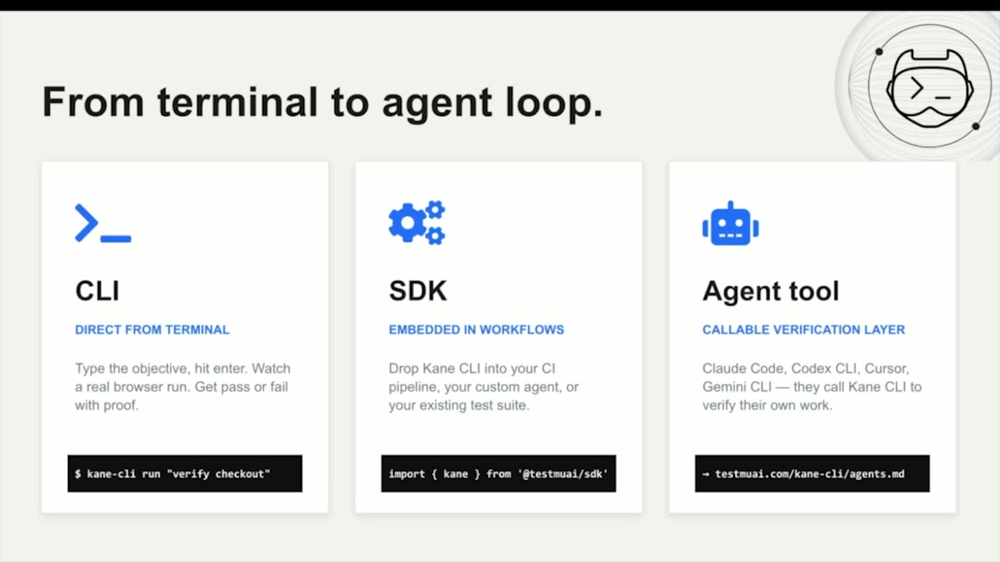
{kind=link}
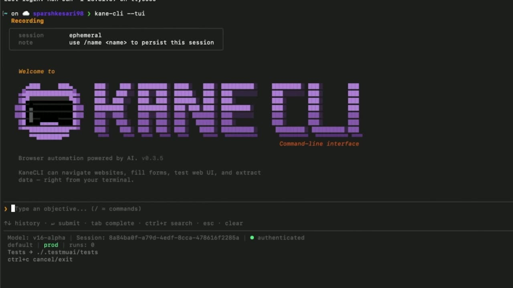
{kind=link}
{kind=link}
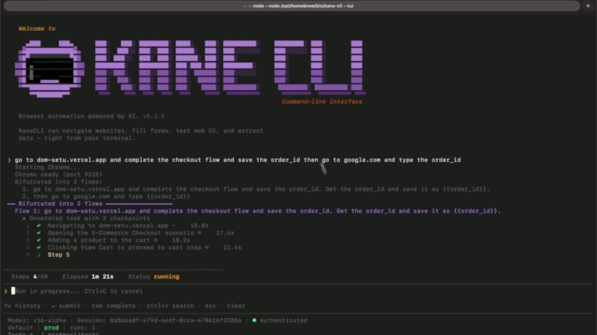
{kind=link}
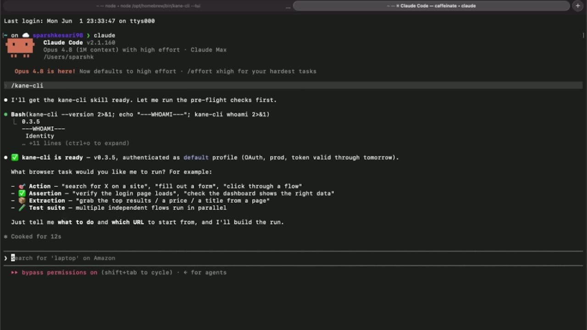
{kind=link}
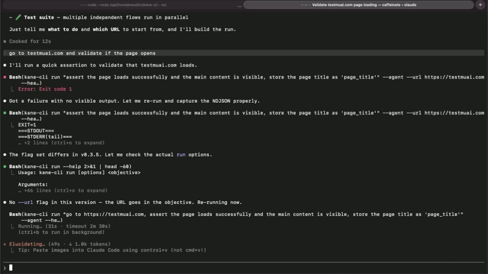
{kind=link}
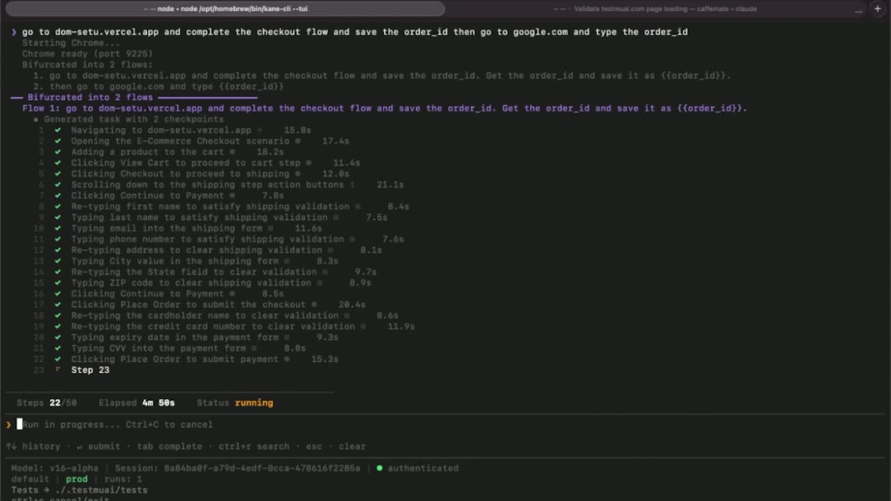
{kind=link}
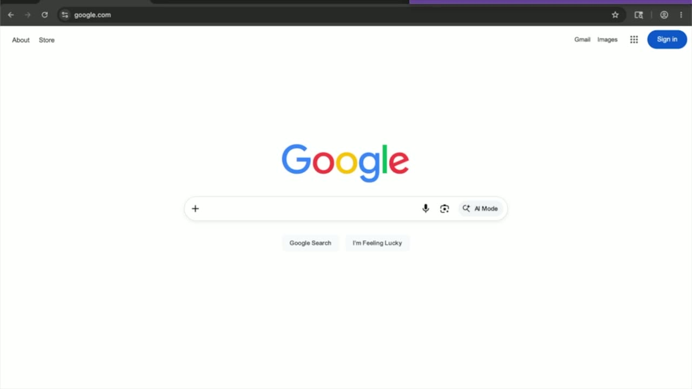
{kind=link}
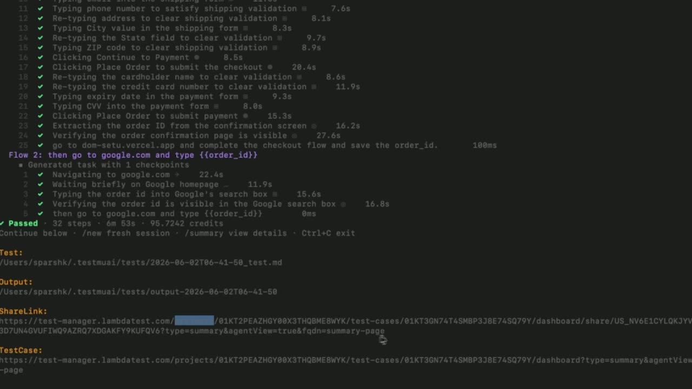
{kind=link}
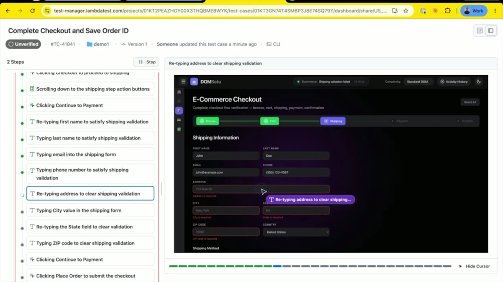
References
Transcript
Show / hide transcript (12,292 chars)
[00:00:00] SPARSH KESARI: Hi, everyone. [00:00:01] Welcome to Microsoft Build 2026. [00:00:03] I am Sparsh Kesari, Developer Relations Manager at TestMu AI, [00:00:07] and we are very excited to be back here. [00:00:10] Today, I am going to talk about a very interesting topic, [00:00:13] agentic testing, because here we are, agents can write code now. [00:00:18] They can also run it, break it, and patch it. [00:00:21] What they haven't really able to do is test it, not in the way [00:00:26] that you would trust before shipping an application [00:00:29] to production, and that's the gap. [00:00:32] An agent can generate hundreds of codes in seconds, [00:00:35] but the speed isn't the hard part. [00:00:38] The hard part is trust. [00:00:40] Did it test the right thing? [00:00:42] Can you actually rely on what it tells you [00:00:45] when it says everything passed? [00:00:47] That's what I want to talk about today. [00:00:49] Specifically, I want to show you our new Kane CLI, [00:00:53] the newest product launched by TestMu AI [00:00:56] to help ship end-to-end products in an agentic era. [00:01:00] It is a command line tool built so that agents can test the code [00:01:04] in a careful, ingenious way, not just running checks, [00:01:08] but giving you something that you can actually rely on. [00:01:13] Everyone is focused on how fast we are building, but very few [00:01:17] of us are asking the real question, [00:01:19] how fast are we validating? [00:01:21] How are we able to trust an application that was built [00:01:25] by a set of autonomous agents and deployed [00:01:28] by another set of agents? [00:01:30] How are we able to trust a feature or a page [00:01:34] that was developed by an agent is doing what it is supposed [00:01:37] to be doing without any human intervention? [00:01:41] This is the exact blind spot that we are targeting today. [00:01:44] The fix isn't adding more a intelligent, smarter system, [00:01:48] but it's to add a deterministic validation layer [00:01:51] between shipping and development. [00:01:55] To solve this, we at TestMu AI released Kane CLI. [00:02:00] Kane CLI is a command line validation layer [00:02:03] that helps you test any feature application on a local browser. [00:02:09] Kane CLI can be used by humans and directly by agents. [00:02:13] It natively integrates with all of your agents. [00:02:17] It could be Claude Code, Codex, Gemini, Copilot, [00:02:20] etc. You can describe to Kane CLI what you want [00:02:23] in natural language prompts, [00:02:25] and Kane CLI will open a local browser, test your feature out, [00:02:30] and you also have the option to validate that on Cloud, [00:02:33] on different cross-browser, cross-device, [00:02:36] cross-environment setups. [00:02:39] This helps you release your features [00:02:42] and products with confidence. [00:02:47] What do you get out of the box with Kane CLI? [00:02:50] First is intent-based control. [00:02:51] You just need to describe [00:02:53] to Kane CLI the natural language objectives. [00:02:56] There is no brittle test scripts, no locators, [00:02:59] no selectors, no exports. [00:03:02] Kane CLI also helps with resilient runs. [00:03:05] It stays on the task even [00:03:07] when there is a complex journey involved. [00:03:10] Kane CLI also automatically discovers bugs while it is [00:03:14] executing and if there is any failure. [00:03:17] It has vision-based waiting. [00:03:19] It actually waits on the required rendered page, [00:03:23] or feature than adding arbitrary time waits. [00:03:29] Kane CLI, by default, generates the Playwright code of the test [00:03:33] that is created, so you can put in the natural language prompts, [00:03:37] and the Playwright test case comes out back. [00:03:41] It also has a test.md framework which has all the test cases [00:03:45] that we have written in a markdown value. [00:03:49] You can auto play it anytime and you can also trigger it [00:03:52] by your CI/CD pipeline. [00:03:55] All the test cases generated by Kane CLI also have Autoheals. [00:03:59] If there is any UI change on your page, [00:04:02] Kane CLI will automatically heal the test cases [00:04:05] and give you the new test code in return. [00:04:07] You also have shareable evidence. [00:04:11] You have video logs as well as trace runs for each run. [00:04:16] Kane CLI also gives out agent-native NDJSON format, [00:04:22] so it's a structured output [00:04:24] which is understandable by all the agents. [00:04:28] To use Kane CLI, we have three options. [00:04:32] You can directly use in your command line CLI [00:04:35] by running this command, and just add your prompts [00:04:38] in natural language prompts. [00:04:40] Kane CLI will start automating that. [00:04:42] We also have an SDK where you can just import Kane [00:04:47] from our SDK and which can be used in your CI pipeline [00:04:50] or any custom agent or any of your tests. [00:04:53] Kane CLI can also automatically talk to your agent tool. [00:04:57] Just point your agent to our agent.md file, [00:05:01] and your agent will understand how [00:05:02] to use Kane CLI effectively while building [00:05:06] your applications. [00:05:08] Let's see this in action. [00:05:11] To start using Kane CLI, you just need [00:05:13] to download the npm module in your system. [00:05:17] You can directly copy this command and paste [00:05:20] in the terminal and let your Kane CLI get downloaded. [00:05:25] Once downloaded, you can open any terminal and call Kane CLI [00:05:29] to start running your test cases. [00:05:31] For now, I will open Kane CLI in our interactive mode. [00:05:37] The session gets initialized, and we get an option [00:05:40] to paste our objective. [00:05:42] I can write any kind of objective here [00:05:45] and Kane CLI will start completing that workflow. [00:05:48] For now, I have a sample website where we are trying [00:05:52] to complete the checkout flow and pasting the order ID [00:05:56] from our first session into Google in another session. [00:06:02] Kane CLI will start understanding the objective, [00:06:05] and as you can see, it has bifurcated into two workflows. [00:06:09] The first task is to complete the checkout flow, [00:06:13] and the second task is to copy the order ID [00:06:15] and paste it in another session. [00:06:20] To complete this, Kane CLI will open a local browser [00:06:23] and start completing and thinking about the next steps. [00:06:26] As you can see, [00:06:27] it has automatically opened the sample website [00:06:30] that we have added, and it is thinking how it can navigate [00:06:34] to the next step. [00:06:47] You can also see all of the steps that it has identified [00:06:52] in the terminal itself, [00:06:55] and it will take some time to complete this. [00:06:58] Let's also check out another method [00:06:59] where you can use Kane CLI directly with your agents. [00:07:06] To do this, you just need to paste this agent.md file [00:07:12] to your agent, and your agent will understand how [00:07:15] to use Kane CLI while it is building out a new feature. [00:07:21] For this, let's open another browser and call out Claude. [00:07:33] To call Kane CLI within your agent browser, [00:07:37] you can just use it by directly adding a slash [00:07:40] and typing "Kane CLI." [00:07:42] A Kane CLI session will be initialized [00:07:47] within your agent environment. [00:07:50] It is identifying my user ID, and Kane CLI is ready to use. [00:07:55] As you can see, you will also see what are the different types [00:07:59] of actions Kane CLI can perform? [00:08:01] It can perform any type of actions, assertions; [00:08:04] it can extract any type of top results [00:08:07] and also run any test suite that we already have [00:08:11] within our project file. [00:08:15] For this, let's try something simple. [00:08:17] "Go to testmuai.com and validate if the page opens." [00:08:36] Kane CLI directly interacts with your AI agent [00:08:39] and thinks about the next steps. [00:08:42] While you are building with any of your AI agents, [00:08:45] let's say it is Claude, Codex, or Copilot, [00:08:49] your agent can directly define what kind [00:08:52] of end-to-end test cases it wants to write according [00:08:55] to the feature or product that you are developing, [00:08:57] and Kane CLI will provide them hands and eyes [00:09:00] to perform those end-to-end workflows. [00:09:06] By default, for any agent, it runs in a headless mode, [00:09:11] and you will see all the results popping [00:09:14] up here once this step is completed. [00:09:18] Meanwhile, let's go back and check [00:09:20] out what is happening in our UI mode. [00:09:23] As you can see, it is placing an order and also thinking [00:09:27] about adding a -- as you can see, [00:09:29] it can also automatically generate some test data [00:09:33] to complete the card checkout process. [00:09:41] It has completed the order, [00:09:43] and it has almost completed the first flow [00:09:48] that it has identified. [00:09:50] Now, it is extracting the order ID [00:09:51] from the first flow confirmation. [00:10:02] Now, it has completed the first flow. [00:10:04] It has extracted and saved the order ID from our first flow, [00:10:08] and now it will try to complete our second step. [00:10:12] That is, opening google.com and pasting the order ID [00:10:15] from our first test case. [00:10:25] Now, it has opened google.com, [00:10:29] and it will now paste our order ID. [00:10:45] It has successfully pasted the order ID from our first flow [00:10:48] into the second flow, and it has completed the workflow. [00:10:57] It has passed the test case. [00:10:59] Now, once my test case is completed, [00:11:01] I can click on "Exit," [00:11:05] and it will save the session [00:11:07] into the particular file folder that we have wanted. [00:11:15] It will also download a created Playwright script [00:11:18] of the test case that we have completed, [00:11:21] and it will also show it a shareable link. [00:11:25] I can just directly copy this and open it in my browser. [00:11:38] Here, we get all the logs of the steps that we have completed. [00:11:42] I can automatically autoplay this, [00:11:44] and it will play how Kane CLI, basically, [00:11:50] completed this workflow. [00:11:51] You can also see the cursor, [00:11:53] what kind of decisions it is making, [00:11:55] and how it is completing the user's objective, [00:12:02] and this becomes a shareable proof of any step, [00:12:06] any test cases that we are running. [00:12:09] You can validate it before completing, [00:12:12] before merging this feature or product into your -- [00:12:25] If there are any bugs that are identified within this step, [00:12:29] you will also see Kane CLI automatically marking [00:12:33] that bug to the user as well. [00:12:36] Now, let's also see what happened while using Kane CLI [00:12:40] with our AI agent. [00:12:45] Our AI agent ran the objective in a headless mode, [00:12:48] and it gave not many stats. [00:12:51] The test case was passed, the objective was completed, [00:12:55] and it also gave us an agent rating. [00:12:57] You can also see the shareable proof by copying this [00:13:00] and pasting and viewing it in your own browser.